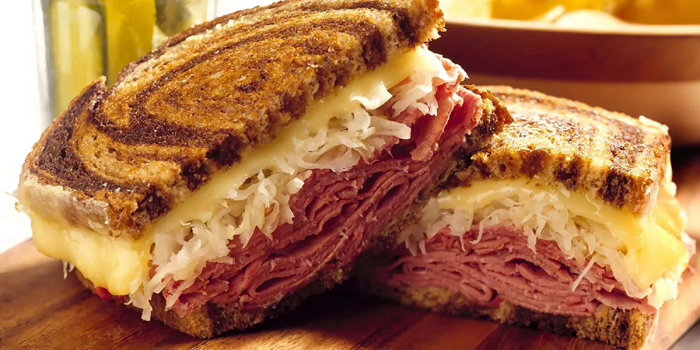

Reuben Sandwich
Subtitle

A Reuben is a grilled sandwich featuring corned beef on rye bread.
The Reuben is a menu staple in Jewish-style delicatessens,
but it's not technically kosher because it combines meat and cheese.
Ingredients
- 8 slices rye bread
- ½ cup Thousand Island dressing
- 8 slices Swiss cheese
- 8 slices deli sliced corned beef
- 1 cup sauerkraut, drained
Steps
- Spread the dressing on one side of each slice of bread.
- Assemble the sandwiches. Butter the top of each sandwich.
- Place the sandwich butter-side down on the hot skillet or griddle.
- Butter the other side. Flip when the bottom slice is golden brown.
- Grill until both sides are golden brown.